Українська академія естетичної стоматології (УАЕС) · журнал «ДентАрт» 2019 №4
Естетична реставрація девітальних зубів. Лекторій Української академії естетичної стоматології
Підготувала Зейнаб Симакіна,клініка-студія «Аполлонія» (м. Полтава, Україна)
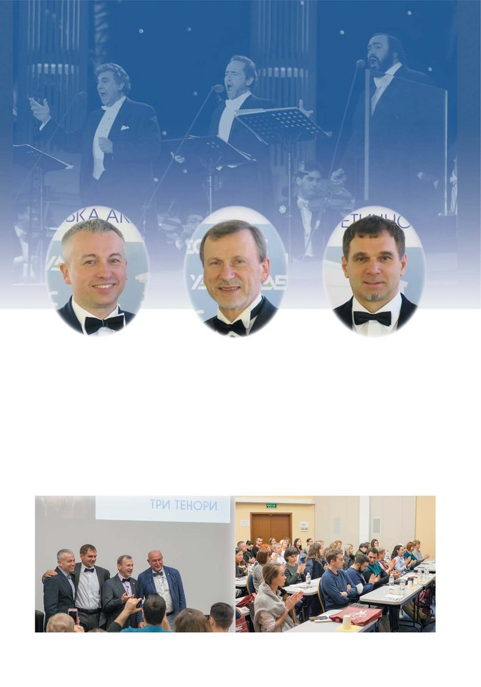
У Полтаві в конференц-залі Навчального центру «Аполлонія» 21 вересня відбувся лекторій Української академії естетичної стоматології. На одній сцені виступили послідовно три президенти Академії: обраний президент Станіслав Геранін, колишній президент Сергій Радлінський і нинішній президент Андрій Пешко.
Лекторій відбувався в дизайні «Три тенори»: перед лекціями звучала арія у виконанні всесвітньо відомого тенора – Пласідо Домінго, Хосе Каррераса, Лучано Паваротті... Розкриваючи тему, «тенори» висвітлили ендодонтичну підготовку до реставрації зубів, змінених у кольорі, техніку прямої і непрямої реставрації таких зубів.
Ендодонтичне лікування зубів, змінених у кольорі
Станіслав Геранін (Полтава)
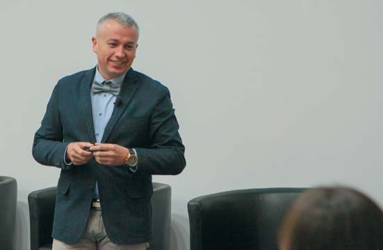
Сучасний підхід до ендодонтичного лікування – це проведення всіх етапів лікування під збільшенням. Мікроскоп розширює мануальні можливості лікаря і нарівні із застосуванням сучасних іригаційних та обтураційних протоколів є необхідною умовою якісного ендодонтичного лікування, безпосередньо впливаючи на можливості та естетику реставрації. Однак навіть нині деякі стоматологи застосовують філери, які можуть призводити до зміни кольору зубів, наприклад, на основі резорцинформаліну або евгенолу і т. п.
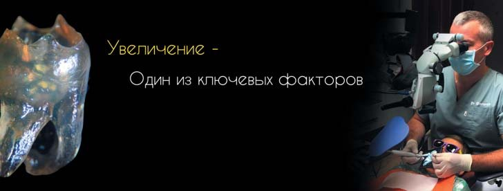
Також однією з частих причин зміни кольору зуба є травма, внаслідок якої відбувається розрив судин. Гемосидерин – темно-жовтий пігмент, що складається з оксиду заліза, утворюється через лізис еритроцитів і, потрапляючи в дентинні канальці, призводить до зміни кольору дентину. Причому вітальність зуба в деяких випадках може бути збережена, тому перед ендодонтичним лікуванням слід зробити тест на вітальність або холодовий тест, використовуючи при цьому охолоджуючі спреї на основі бутану або пропану за протоколом.
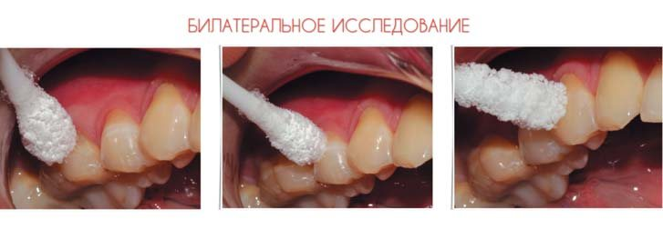
Іноді причиною зміни кольору може бути застосування мінерального триоксидного агрегату, в складі якого дикальцію силікат, трикальцію силікат, трикальцію алюмінат, оксид вісмуту, дигідрат сульфату кальцію, мікроелементи. У перших поколіннях ProRoot MTA (Dentsply Sirona) до його складу входив оксид заліза, що надавало сірого відтінку порошку і подальшій реставрації. У наступних поколіннях ProRoot MTA зі складу прибрали іони заліза, але залишилася радіоконтрастна речовина – оксид вісмуту, яка також може змінювати колір зуба. Вирішити цю проблему можна, використовуючи в устьовій коронарній зоні дентинний адгезив як ізолюючий агент.
Також одним з грізних ускладнень, що впливають на прогноз і побічно на естетику реставрації, є апікальна і цервікальна резорбції. На виникнення резорбції впливають хімічний і механічний фактори, хронічна агресивна інфекція. У результаті апікальної резорбції утворюються дефекти, які недоступні для ретроградного втручання. При стимуляції різними факторами відбуваються резорбтивні зміни, без стимуляції – спонтанне припинення резорбції. Ушкодження цементно-емалевого з’єднання і кругової зв’язки зуба може мати вигляд безсимптомної рожевої плями. Пацієнт може скаржитися на зміну кольору зуба, а насправді це велика грануляція, яка вже вросла в структуру зуба внаслідок активно-інвазивної цервікальної резорбції.
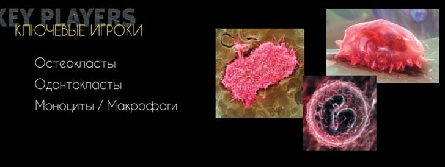
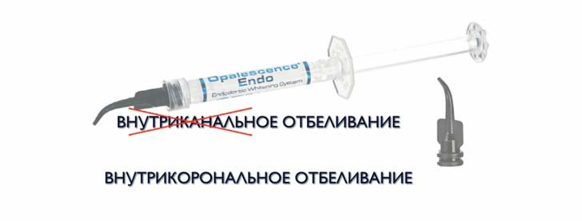
Одним із методів корекції кольору зуба перед втручанням є внутрішньокоронкове відбілювання. Клінічні дослідження доводять, що зуби, проліковані ендодонтично з правильно зробленим за показаннями відбілюванням або без відбілювання, функціонально не змінюються. Термокаталізація – один із перших методів, який застосовувався для відбілювання, у 100% випадків призводив до розвитку цервікальної резорбції. Нині застосовують два основних елементи для внутрішньокоронкового відбілювання: перекис карбаміду і перборат натрію. Ефективно діючи, ці речовини дають значно менше ускладнень.
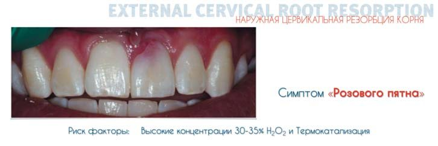
Протокол внесення відбілювального агента простий: зона доступу очищається від реставраційного матеріалу, гутаперчі і силера на 1-2 мм нижче устьової частини зуба, і створюється бар’єр з текучого матеріалу, наприклад SDR, також слід захистити контактні поверхні зуба. У цервікальному бар’єрі потрібно створити зону для внесення відбілювального агента і внести замішаний на перекисі водню або на дистильованій воді карбонат натрію. Порожнина герметично запечатується на 2-3 тижні тимчасовою пломбою з композиту із застосуванням тефлону.
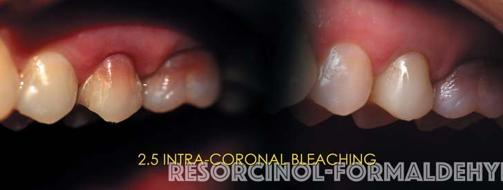
Так можна вирішити проблему змінених тканин, застосувати малоінвазивні методики, тонкі реставрації і отримати кращий естетичний результат.
Пряма реставрація зубів, змінених у кольорі
Сергій Радлінський (Полтава)
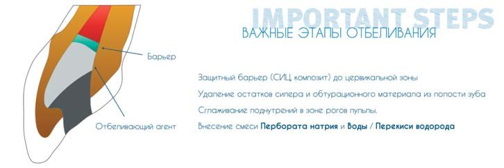
Після ендодонтичного лікування зуб/зуби, які є частиною зубного ряду, прикусу, зубощелепної системи, біорецепторної системи організму, стають слабкою ланкою, втрачаючи багато властивостей вітальних зуба/зубів. З позиції естетики – це втрата «живого» кольору і анатомічної форми – те, що ми бачимо до і після реставрації. З функціональної позиції – це втрата відцентрового руху зубного ліквору, пропріоцептивної чутливості, структур поглинання оклюзійного стресу. В естетичній реабілітації ендодонтично лікованих зубів важливо передбачити не лише елементи відновлення та імітації їх природного кольору, а й структурні елементи компенсації.
Девітальні зуби складаються з таких самих емалі та дентину, що й вітальні зуби, проте у вітальних зубах одонтобласти, прокачуючи тканинну рідину в зубні тканини, підтримують у дентині тиск 25 мм рт. ст. Такий постійний тиск у дентині дає зубу унікальні здатності в поглинанні оклюзійного стресу. І завдяки цьому механізму людина з вітальними зубами відчуває силу стискання зубів, а людина з девітальними зубами її не контролює.
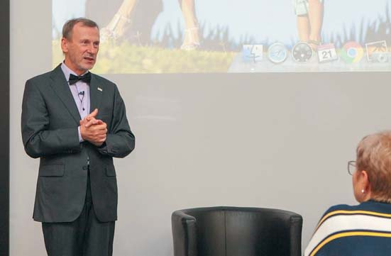
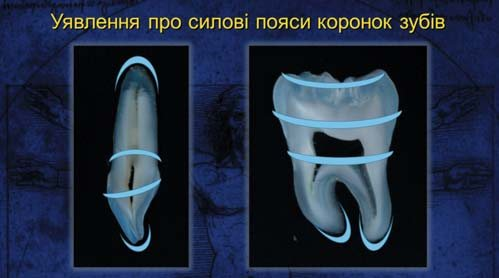
Коронка зуба має три силових пояси, що обмежують деформації внаслідок оклюзійного навантаження: перший пояс – ріжучий край і кільце жувальної поверхні, другий – екватор коронки з дахом порожнини зуба, третій – край кісткової лунки. У девітальних зубах перший і другий пояси зазвичай зруйновані, і при відновленні таких зубів реставраційними матеріалами зруйновані пояси треба компенсувати, наприклад, за допомогою армування скловолокном у заданих місцях.
Фундаментальне положення функціонування зубощелепної системи як частини всього організму – зуби деформуються, і завдяки анізотропній структурі оклюзійне навантаження розподіляється по контрфорсах і пошарово поглинається. Деформація з поглинанням стресу відбувається циклічно під час жування приблизно 300 тисяч разів протягом 5 років і в 4-5 разів частіше у людей, які страждають на бруксизм. Виявлені тріщини в емалі – достовірні ознаки бруксизму.
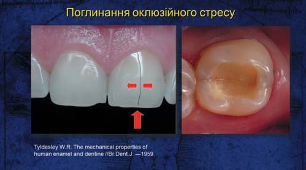
Система відновлення зубів за Блеком (1896-1908), запозичена зі столярної справи, заснована на макроретенції і блокуванні природних деформацій зубів при поглинанні оклюзійних навантажень. Система адгезивного відновлення заснована на мікроретенції і «вбудовуванні» реставрації у природні деформації під дією оклюзійного стресу. Надійне склеювання із зубними тканинами дозволяє зберегти природні зубні структури.
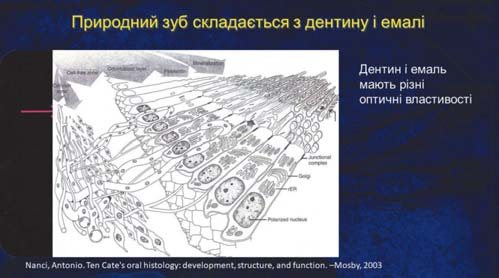
У цьому клінічному випадку передні зуби реставровані 16 років тому: вітальний зуб 11 і девітальний зуб 21. Для відновлення природного кольору зуба 21 було зроблено резекцію коронкового дентину, зміненого в кольорі, а з’єднання коронки з коренем виконано композитною вкладкою без будь-якого армування. Адгезивне з’єднання композиту із зубними тканинами успішно протистоїть циклічним навантаженням, оскільки немає ознак дебондингу.
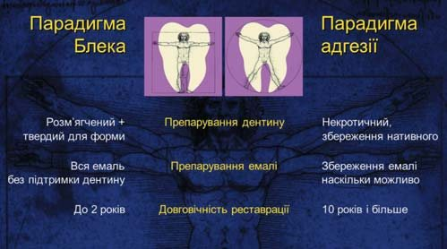
Зубні тканини і всі реставраційні матеріали мають значну різницю (х4-9) у граничних навантаженнях на стискання і на розтягування, проте найзначніша різниця в цих даних у природної емалі – х38 (у дентині лише х6!). Різниця пов’язана з дискретною структурою емалі, утвореною пучками емалевих призм, цією властивістю можна пояснити появу вертикальних тріщин в емалі при бруксизмі, коли вони ще відсутні в дентині.
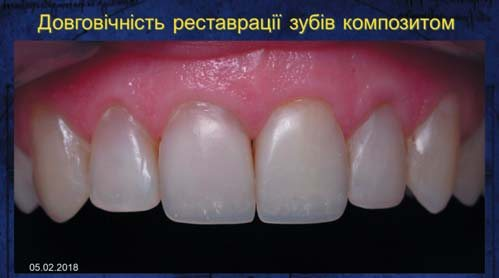
Клінічний приклад заміни металокерамічної мостоподібної конструкції на композитну (опорні зуби 12/21, штучний зуб 11) з ендодонтичним переліковуванням опорних зубів, неякісно обтурованих методом однієї пасти. Зуби 12 і 21 після обтурації кореневого каналу були армовані композитними штифтами ІзіПост (Dentsply Sirona), штучний зуб виконаний на втиснутій металевій матриці й армований просоченим скловолокном ІверСтік (GC).
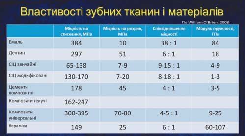
На слайді подано перелік технік відновлення девітальних зубів 12, 21 і 22 без перепломбування кореневих каналів (зуб 11 – вітальний). Армування шийок реставрованих девітальних зубів виконано просоченим скловолокном ДентаПрег (ADM Dentapreg) по піднебінній поверхні композитної вкладки, де матеріал піддається розтягуванню, і відсутнє по передній поверхні композитної вкладки, де матеріал піддається стисканню під час жувальної функції.
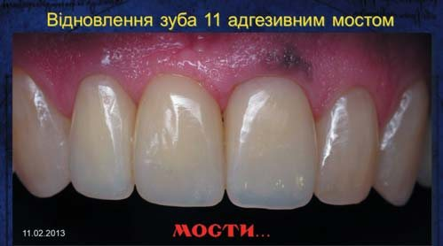
Непряма реставрація зубів, змінених у кольорі
Андрій Пешко (Київ)
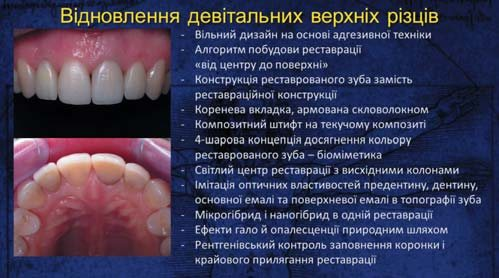
Реставрація зубів, змінених у кольорі, – досить складне клінічне завдання. Незалежно від того, який тип реставрації обрано – прямий чи непрямий, є певний протокол відновлення таких зубів. Важливо розуміти, що основне значення для досягнення максимального естетичного результату має колір основи коронкової частини зуба, на яку виготовляється цільнокерамічна конструкція. Щоб забезпечити адекватний колір дисколоритного зуба, можна застосувати такі клінічні технології та їх комбінацію: відбілювання, використання маскувальних агентів, відновлення кукси зуба естетичними матеріалами.
Керамічні реставрації мають оптичні властивості, подібні з тканинами зуба: транслюцентність забезпечує природну трансмісію світла і природний вигляд керамічного вініра або коронки.
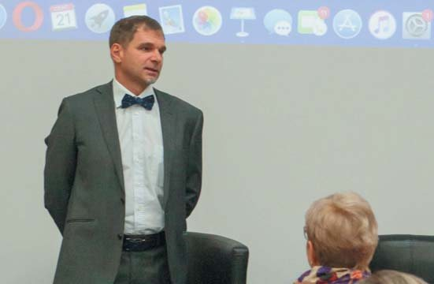
Металокераміка не має транслюцентності, внаслідок чого ясна біля шийки зуба мають вигляд тьмяних і темних. Матеріали на основі оксиду цирконію і пресованої кераміки мають позитивну світлодинаміку – світло проникає в зону шийки зуба, підсвічуючи ясна і забезпечуючи природну рожеву естетику.
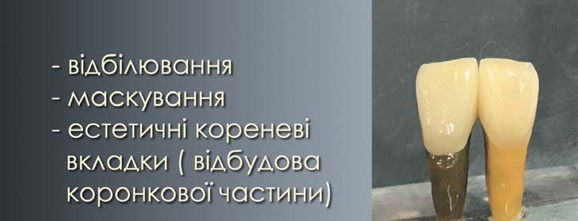
Клінічні техніки відновлення кольору дисколоритних зубів
Відбілювання – ендодонтичне та офісне, використання композитних світлозатверджуваних опакерів, які дозволяють заблокувати темний колір кукси, відновлення куксової частини зуба композитами core build-up, що імітують колір дентину (у комбінації зі скловолоконними штифтами), використання естетичних литих кореневих вкладок з напресуванням або нанесенням кераміки.
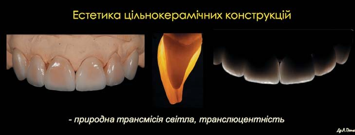
Селективне офісне відбілювання зубів 13, 23, 34, 33, 43, 44, які не включені в протезування, дозволяє поліпшити загальний фон і виготовити світліший відтінок керамічних конструкцій.
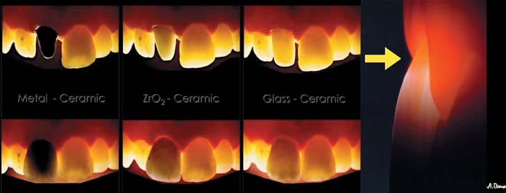
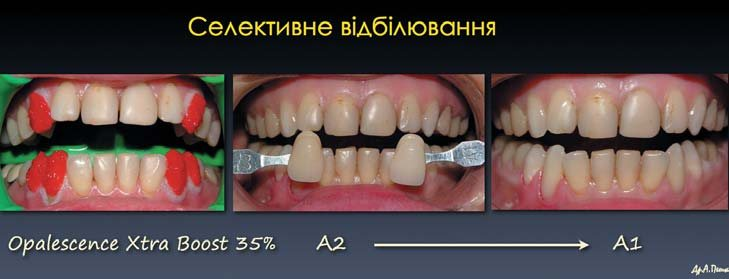
Опакові (маскувальні) композити дозволяють заблокувати темний колір куксової частини дисколоритного зуба перед виготовленням цільнокерамічної конструкції. Зазвичай світлозатверджувані, бувають версії з хімічним/подвійним отвердінням.
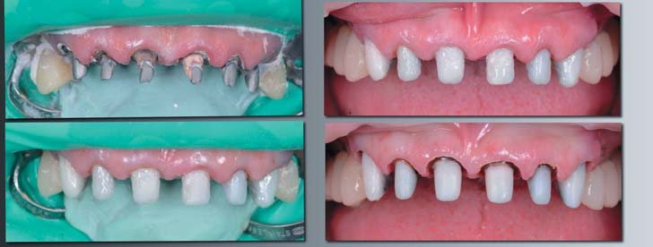
Варіант гібридного відновлення – старі литі куксові вкладки з КХС трансформовані в метало-композитні з адекватним кольором основи.
Клінічні етапи: існуючі вкладки оброблені інтраоральним піскоструминником (оксид алюмінію 30 мкм), далі нанесено універсальний адгезив і проведено ламінування вкладок реставраційним композитом опакового відтінку.
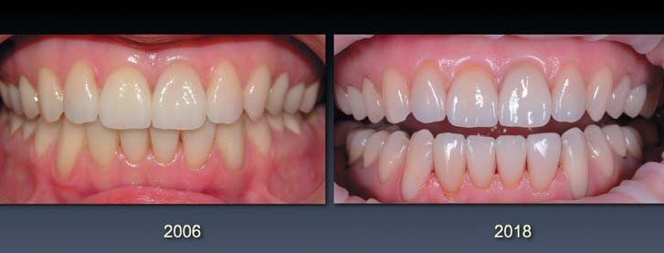
Для отримання високоестетичних керамічних реставрацій на дисколоритних зубах важливо враховувати такі фактори: колір препарованої основи зуба повинен бути наближеним до універсального кольору дентину; використовуючи різну товщину і опаковість кераміки, можна заблокувати дисколоритну основу зуба; застосування опакових/світлих композитних цементів для адгезивної фіксації з попереднім використанням пробних (примірювальних) паст також дозволяє поліпшити естетичний результат.
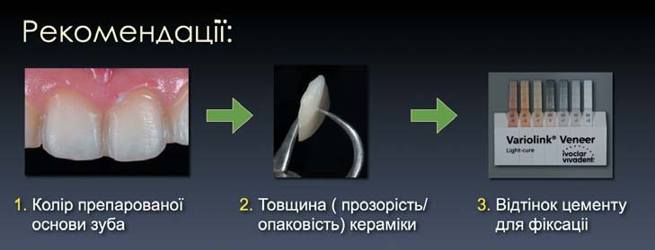
Щорічна конференція УАЕС
Того ж дня, 21 вересня 2019 року, відбулася і щорічна конференція Української академії естетичної стоматології, на якій обговорювалися традиційні звітні питання. До лав академії прийняли Романа Турецького (м. Київ), і обговорювалася кандидатура президента УАЕС каденції 2022-2023 років. Після бурхливої дискусії більшістю голосів було обрано Ксенію Лазарєву, стоматолога-викладача Клініки-студії і Навчального центру «Аполлонія» і редактора зі стоматології журналу «ДентАрт».
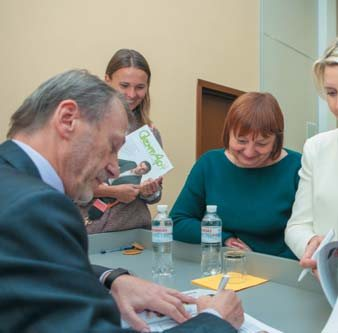
Весь лекторій прозвучав на високій ноті, як і належить звучати тенорам! З огляду на те, що в третьому номері «ДентАрту» за цей рік були надруковані статті Станіслава Гераніна і Сергія Радлінського, а Андрій Пешко дав інтерв’ю і прикрасив собою обкладинку номера, після завершення лекційної програми відбулася тривала автограф-сесія.
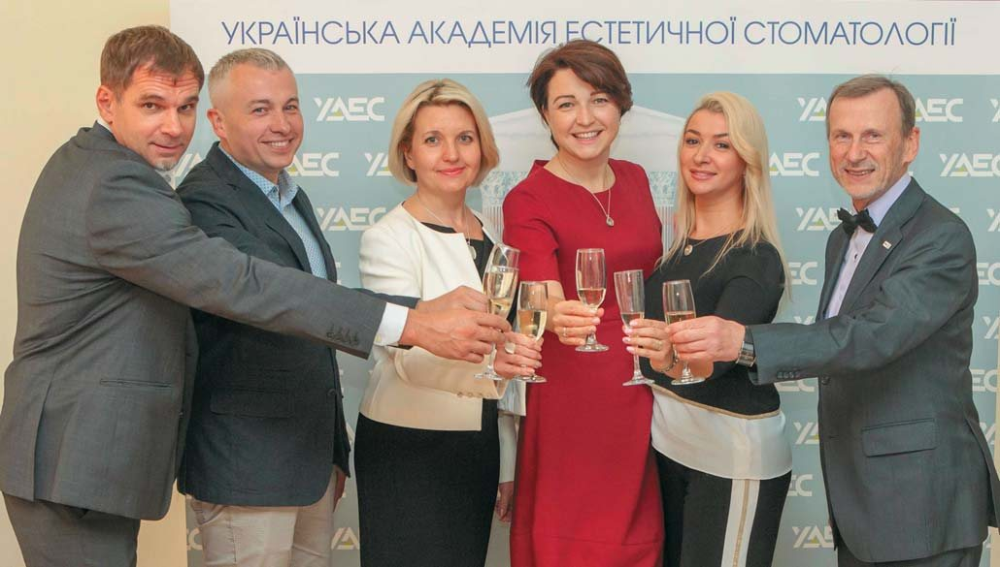
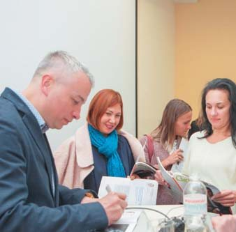
Захід закінчився дружнім спілкуванням з келихом шампанського. Для цього репортажу журнал «ДентАрт» запровадив нову рубрику «Українська академія естетичної стоматології (УАЕС)» і сподівається, що ця рубрика стане постійною.
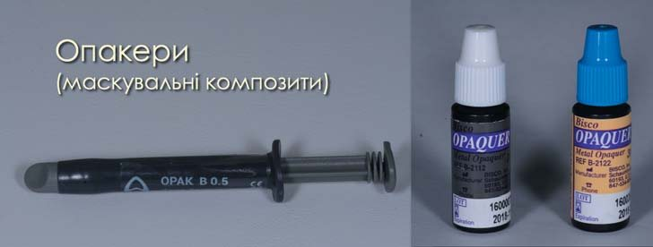
Підготувала Зейнаб Симакіна, клініка-студія «Аполлонія».